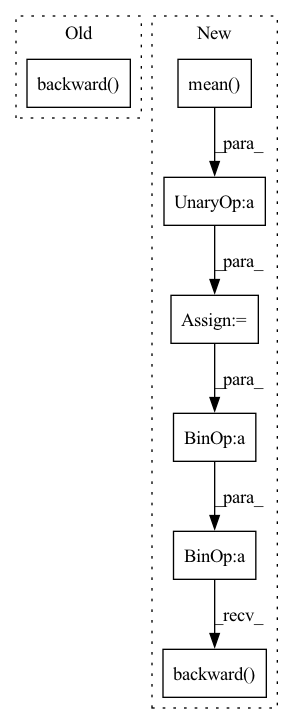

Pattern ID :1679

Before Change
raise NotImplementedError
policy_loss_value = policy_loss.detach().cpu().numpy()
self.policy_optimizer.zero_grad()
policy_loss.backward()
self.policy_optimizer.step()
self.tot_update_count += 1
After Change
policy_loss_value = policy_loss.detach().cpu().numpy()
//entropy loss
entropy_loss = -torch.mean(dist_entropy)
entropy_loss_value = entropy_loss.detach().cpu().numpy()
tot_loss = v_loss + entropy_loss + policy_loss
self.policy_optimizer.zero_grad()
self.v_optimizer.zero_grad()
tot_loss.backward()
self.policy_optimizer.step()
self.v_optimizer.step()
self.tot_update_count += 1
In pattern: SUPERPATTERN
Frequency: 3
Non-data size: 7
Instances
Fragment ID: 7785863
Project Name: x35f/unstable_baselines
Commit Name: 5af9f89c6d399a424b451a524af66c97ab900df8
Time: 2021-03-30
Author: 1621322691@qq.com
File Name: ppo/model.py
M Class Name: PPOAgent
N Class Name: PPOAgent
M Method Name: update(2)
N Method Name: update(2)
M Parent Class: BaseAgent,torch.nn.Module
N Parent Class: BaseAgent,torch.nn.Module
M File Name: ppo/model.py
N File Name: ppo/model.py
M Start Line: 78
M End Line: 118
N Start Line: 79
N End Line: 125
'>
Before Change
raise NotImplementedError
policy_loss_value = policy_loss.detach().cpu().numpy()
self.policy_optimizer.zero_grad()
policy_loss.backward()
self.policy_optimizer.step()
//compute value loss
v_loss = F.mse_loss(curr_state_v, future_return_batch)
After Change
//entropy loss
entropy_loss = -torch.mean(-new_log_pi) * self.entropy_coeff
entropy_loss_value = entropy_loss.item()
//compute policy loss
if self.policy_loss_type == "clipped_surrogate":
surrogate1 = advantages * ratio_batch
//print(self.clip_range, advantages.shape, ratio_batch.shape)
surrogate2 = advantages * torch.clamp(ratio_batch, 1 - self.clip_range, 1 + self.clip_range)
min_surrogate = - torch.min(surrogate1, surrogate2)
policy_loss = min_surrogate.mean()
elif self.policy_loss_type == "naive":
raise NotImplementedError
elif self.policy_loss_type == "adaptive_kl":
raise NotImplementedError
policy_loss_value = policy_loss.detach().cpu().numpy()
tot_policy_loss = policy_loss + self.entropy_coeff * entropy_loss
self.policy_optimizer.zero_grad()
tot_policy_loss.backward()
self.policy_optimizer.step()
//compute value loss
v_loss = F.mse_loss(curr_state_v, future_return_batch)
'>
Fragment ID: 7785861
Project Name: x35f/unstable_baselines
Commit Name: f41e2cf788d0214add3fb342aee698910c63e651
Time: 2021-04-01
Author: 1621322691@qq.com
File Name: ppo/model.py
M Class Name: PPOAgent
N Class Name: PPOAgent
M Method Name: update(2)
N Method Name: update(2)
M Parent Class: BaseAgent,torch.nn.Module
N Parent Class: BaseAgent,torch.nn.Module
M File Name: ppo/model.py
N File Name: ppo/model.py
M Start Line: 83
M End Line: 126
N Start Line: 79
N End Line: 137
'>
Before Change
policy_ratio = (trajectories["log_prob_actions"] - trajectories["old_log_prob_actions"]).exp()
policy_loss = -torch.min(policy_ratio * trajectories["advantages"], torch.clamp(policy_ratio, min=1 - ppo_clip, max=1 + ppo_clip) * trajectories["advantages"]).mean()
actor_optimiser.zero_grad()
policy_loss.backward()
actor_optimiser.step()
// Fit value function by regression on mean squared error
After Change
// Fit value function by regression on mean squared error
value_loss = F.mse_loss(trajectories["values"], trajectories["rewards_to_go"])
// Add entropy regularisation
entropy_loss = -trajectories["entropies"].mean()
agent_optimiser.zero_grad()
(policy_loss + value_loss_coeff * value_loss + entropy_loss_coeff * entropy_loss).backward()
clip_grad_norm_(agent.parameters(), 1) // Clamp norm of gradients
agent_optimiser.step()
'>
Fragment ID: 7785858
Project Name: kaixhin/imitation-learning
Commit Name: fd3ee1838359dcc6da9836b6249396e595ff90db
Time: 2020-04-16
Author: design@kaixhin.com
File Name: training.py
M Class Name: AnonimousClass
N Class Name: AnonimousClass
M Method Name: ppo_update(7)
N Method Name: ppo_update(6)
M Parent Class:
N Parent Class:
M File Name: training.py
N File Name: training.py
M Start Line: 33
M End Line: 50
N Start Line: 34
N End Line: 51